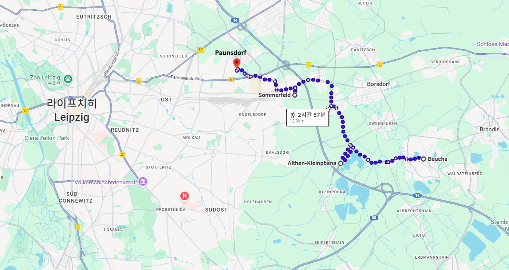
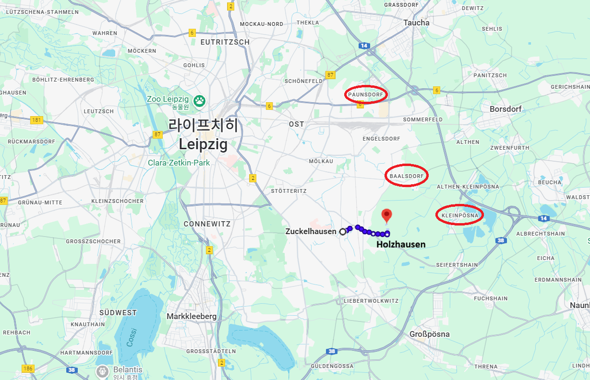
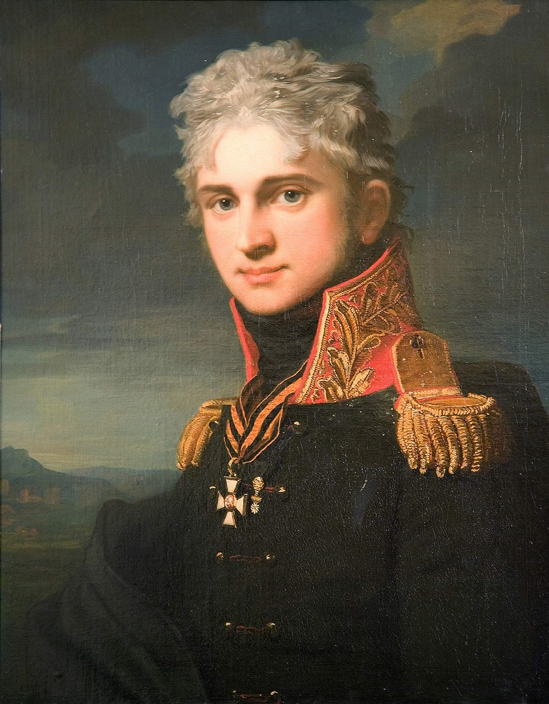
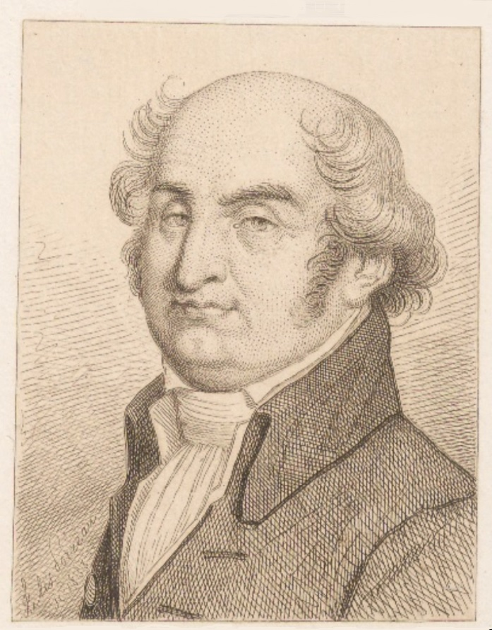
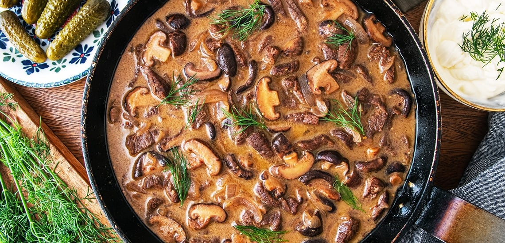
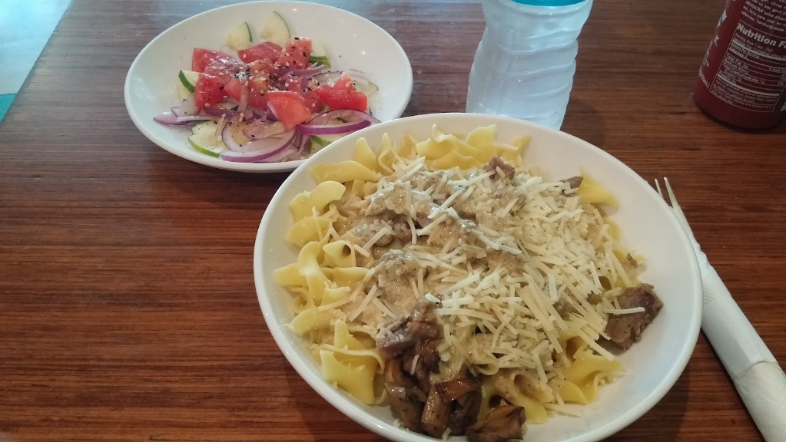
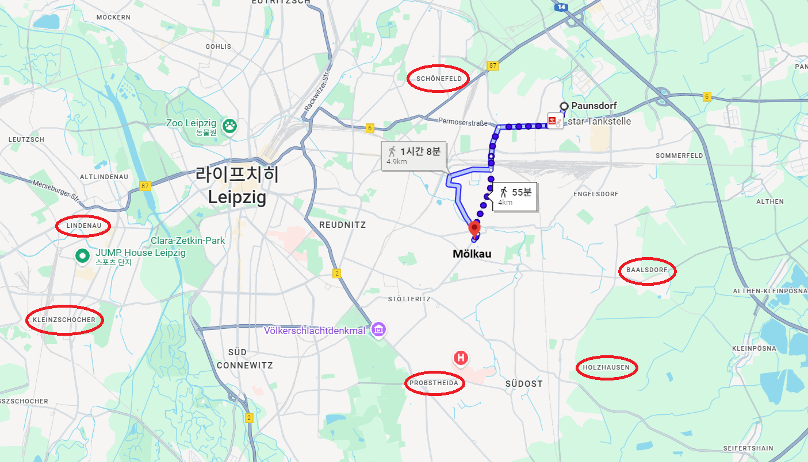
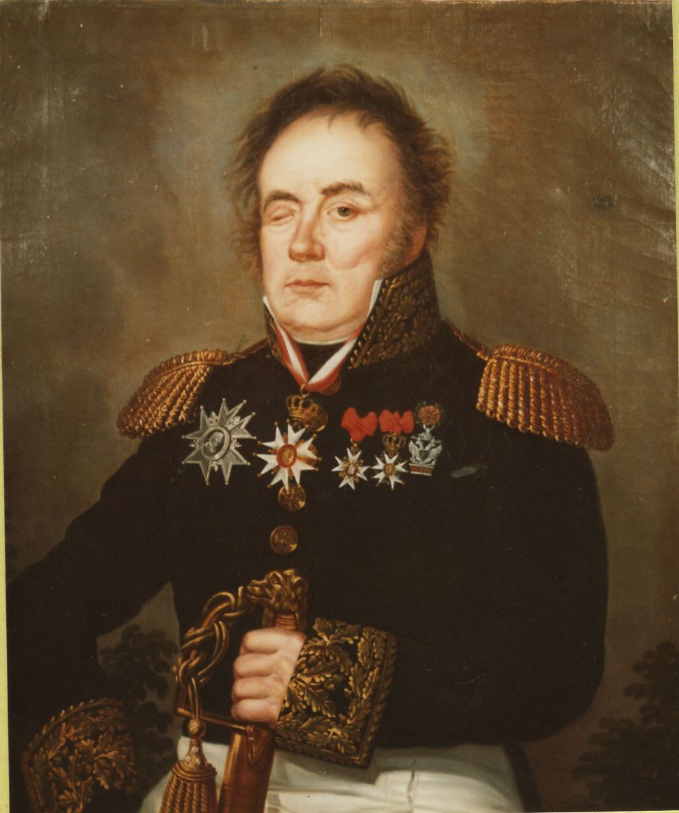

라이프치히 전투 (29) - 안전제일 베니히센
게시: 2025-12-22T06:30:38+09:00
18일 새벽까지 내렸던 비는 특히 부브나(Bubna)가 이끄는 오스트리아 경보병 사단이 결정적으로 늦어지는 결과를 낳았습니다. 베니히센의 우익을 맡았던 이 경보병 6,500명은 보이하(Beucha) 인근에서 파르터강을 건너야 중간 목표지점인 클라인푀스나(Kleinpösna)로 갈 수 있었는데, 가보니 비로 불어난 파르터의 급류에 의해 다리가 쓸려가 버렸던 것입니다. 깜깜한 밤중에 급류 속 여울목을 찾아 보병과 포병들을 건너게 하는 것은 많은 어려움과 시간 지체가 따르는 일이었습니다. 결국 이들이 도강을 완료한 것은 바클레이가 공격을 개시하던 오전 8시경이었습니다. 결국 부브나는 저 멀리서 들려오는 바클레이의 포성을 들으며 클라인푀스나로, 거기서 다시 북쪽으로 선회하여 엥겔스도르프(Engelsdorf)를 지나 라이프치히-뷔르젠(Wurzen) 대로변의 파운스도르프(Paunsdorf)를 향해 서둘러 행군해야 했습니다. 베니헤센의 다른 부대들도 이런저런 어려움을 겪은 것은 마찬가지였습니다. 가령 비교적 순조롭게 행군한 좌익의 지텐(Zieten)의 프로이센 여단조차도 10시경에나 추켈하우젠(Zuckelhausen) 앞에 도착했습니다.

(부브나가 이동한 동선을 보면 약간 이해가 가지 않을 정도로 뒤죽박죽입니다만, 1813년 당시와 지금의 강물 흐름 및 마을 위치 등이 다르기 때문일 수 있습니다. 아무튼 잘 닦인 도로를 따라 걸어도 3시간은 걸릴 거리입니다.) 그랑다르메가 저항하지 않고 물러섰는데도 이렇게 전진이 느린 것에는 도로와 강, 피로 이외에도 중요한 이유가 있었습니다. 베니히센의 눈에 후퇴하는 그랑다르메는 보였지만, 자신의 우측에서 포위망을 완성해줄 베르나도트의 부대는 전혀 보이지 않았던 것입니다. 베니히센은 저 멀리 북쪽에서 들려오는 포성 소리가 블뤼허의 것이라고 짐작했지만, 베르나도트가 심각하게 늦거나 혹은 끝내 나타나지 않을 경우에 대해 생각하지 않을 수 없었습니다. 만에 하나라도 나폴레옹이 자신과 블뤼허 사이에 커다란 구멍이 있다는 것을 눈치채고 그 구멍을 통해 반격에 나선다면, 자신의 우익이 나폴레옹에게 대책없이 유린당할 수 있었습니다. 특히나 연합군 수뇌부는 나폴레옹이 바트 뒤벤 쪽, 즉 베니히센의 오른쪽으로 탈출을 꾀할 가능성이 꽤 높다고 보고 있었고 그런 예상은 베니히센에게도 전달되었기 때문에 더더욱 베니히센은 조심스러울 수 밖에 없었습니다. 이렇게 자신이 맡아야 하는 전선의 좌측에는 강력한 아군(바클레이)가 있지만 우측에는 구멍이 뻥 뚫린 상태라면, 지휘관은 보통 둘 중 하나의 결정을 내립니다. 자신의 왼쪽 방면은 더 좌측에 존재하는 아군에게 맡기고 자신은 아군 전체 전선의 구멍을 막기 위해 우측에 병력을 집중하거나, 반대로 불안한 우측과는 거리를 두고 든든한 좌측에 집중하는 것이지요. 베니히센은 전자, 즉 든든한 쪽에 집중하고 불안한 쪽을 멀리하는 스타일이었습니다. 베니히센은 먼저 자신의 좌측인 바클레이와 연계가 가능한 쪽, 즉 남쪽 추켈하우젠-홀츠하우젠(Holzhausen)의 2개 마을부터 먼저 공격을 시작했습니다. 반면, 원래 베르나도트와 연계하기 위해서 점령해야 했던 파운스도르프에는 부브나의 오스트리아 경보병 1개 사단만 파견했습니다.

(추켈하우젠과 홀츠하우젠의 위치입니다. 참고로 저 두 마을 사이의 거리는 약 2km 정도입니다. 추켈하우젠에는 마르샹(Marchand)이 이끄는 헤센 및 바덴 병사들로 구성된 사단이 지키고 있었고, 홀츠하우젠에는 샤르팡티에(Charpentier)가 지휘하는 프랑스 사단이 지키고 있었습니다. 그 사이에는 유격병들이 얇은 띠를 이루고 느슨하게 지키고 있었으며, 그 두 마을 뒤에는 제라르(Gerard)가 예비로 1개 사단을 거느리고 있었습니다.) 막도날의 제11군단이 지키고 있던 이 두 마을은 생각보다 강력하게 저항하여, 10시부터 시작된 공격은 베니히센의 압도적인 병력 우위에도 불구하고 엎치락 뒤치락하는 혼전을 펼치며 오후 1시 넘어서까지 결판이 나지 않았습니다. 결국 북동쪽의 발스도르프(Baalsdorf)를 먼저 점령한 독투로프(Dokhturov)의 군단이 북쪽에서도 밀고 내려오자, 비로소 이 두 마을을 지키던 막도날은 서쪽인 프롭스트하이다 방향으로 허둥지둥 후퇴했습니다. 그런 와중에도 그랑다르메는 끈질기게 잘 싸워 베니히센의 폴란드 방면군에게 큰 피해를 끼쳤습니다. 특히 이 두 마을을 점령하고 막도날의 뒤를 추격하던 클레나우와 독투로프의 전열 사이에 순간적으로 틈이 생기자, 세바스티아니(Sebastiani)와 왈더(Walther)의 기병대들이 그 틈을 노리고 순간적으로 돌격해왔을 때는 전열이 무너질 뻔 하기도 했습니다. 다행히 러시아 보병들도 잘 버티어 주었고, 뒤에서 대기하던 스트로가노프(Pavel Alexandrovich Stroganov)의 경기병들이 뛰어들어 상황을 뒤집었습니다.

(파벨 스트로가노프입니다. 1808년, 그러니까 그가 34세 때 그려진 이 초상화가 사실 그대로라면 상당한 미남이네요. 그는 어려서 파벨 1세를 대부로 두었고, 알렉산드르 1세와 어린 시절 친구로 함께 자란 정통 귀족 가문 출신입니다. 그는 서류상으로는 5살 때부터 사병으로 군 복무를 시작했으나, 그건 서류상 이름만 올려두는 당시의 관례에 따른 것이고, 실제로 12세에 장교로 임관했으나 실제로는 장교로 임관되자마자 휴가를 얻어 4년 동안 프랑스인 가정교사와 함께 온 유럽을 돌며 공부도 하고 견문도 넓혔습니다. 그런데 그 가정교사가 프랑스 혁명 달력을 만든 수학자이자 정치가인 길베르 롬므(Gilbert Romme)였습니다. 덕분에 그는 프랑스 혁명이 한창일 때 파리에서 그 모습을 지켜보았을 뿐만 아니라, 로베스피에르나 당통과 같은 혁명가들과 한 방에서 혁명에 대한 맹세를 하고 그들과 함께 서명까지 했으며, 자코뱅으로 등록까지 했습니다. 이에 기겁을 한 아버지가 사람을 보내 파벨을 러시아로 데려왔지요. 하지만 그가 유명해진 것은 프랑스 혁명과의 연관성이나 군인으로서의 업적이 아니라 요리 덕분입니다. 바로 비프 스트로가노프가 이 양반 이름을 따서 만들어진 것입니다.)

(파벨 스트로가노프의 가정교사인 길베르 롬므입니다. 혁명력에 대한 기여 외에도, 그는 급진파인 산악당(Montagnards, 몽따냐르) 소속이었습니다. 따라서 테르미도르 반동으로 로베스피에르가 몰락하자 그도 체포되어 단두대형을 선고 받았는데, 그는 미리 자살로 생을 마감했습니다.)

(비프 스트로가노프는 당시 잘 나가는 러시아 가문에는 다 있기 마련인 프랑스 요리사가 만든 것이라고 합니다. 실제로 러시아어로도 이 요리 이름은 Бефстро́ганов, 즉 베프스트로가노프인데, 이건 프랑스어 뵈프 스트로가노프(Bœuf Stroganoff, bœuf는 글자 그대로 beef)를 그대로 소리나는 대로 키릴 문자로 표기한 것입니다. 이 쇠고기 요리에 스트로가노프의 이름이 붙게 된 것은 저 파벨 스트로가노프가 시베리아에 부임했을 때의 일인데, 요리사가 쇠고기 요리를 하려고 보니 쇠고기가 꽁꽁 얼어 있어서 어쩔 수 없이 얇게 잘라내어 요리한 것에서 비롯되었다고 합니다. 일설에는 비프 스트로가노프는 저 파벨 스트로가노프가 아니라 같은 가문의 정치가인 알렉산드르 스트로가노프의 이름을 딴 것이라고도 합니다.)

(비프 스트로가노프의 핵심은 '얇게 저민' 쇠고기 조각들을 볶아서 크림과 겨자로 만든 소스에 버무려 내놓는 것인 모양입니다. 그러나 우리나라 막국수처럼, 비프 스트로가노프에도 국가별 지방별로 온갖 변형이 있어서 어떤 곳에서는 쌀밥과 함께, 어떤 곳에서는 파프리카와 함께 내놓습니다. 이건 한 10년 전에 제가 미국 대학가 근처에 놀러갔다가 허름한 식당에서 시켜 먹어본 비프 스트로가노프입니다. 미국에서는 저렇게 파스타 위에 익힌 쇠고기를 얹고 크림 소스와 함께 치즈를 잔뜩 뿌린 음식을 비프 스트로가노프라고 부릅니다. 오리지널 러시아 요리사들이 보면 뒷목 잡을 일이라고 하던데, 아무튼 맛은 별로 없었습니다.) 이렇게 추켈하우젠과 홀츠하우젠, 그리고 북쪽으로는 발스도르프까지 점령하면서 베니히센은 순조롭게 바클레이와 연계할 수 있었고, 그의 좌익은 바클레이의 담당인 프롭스트하이다에도 포격을 가할 위치까지 진출했습니다. 그러나 딱 거기까지였습니다. 베니히센에게 주어진 임무는 좌로는 바클레이와, 우로는 베르나도트와 연계하여 포위망을 완성하는 것이었는데, 베니히센은 자신이 공략해야 하는 더 북쪽의 마을들, 즉 묄카우(Mölkau), 파운스도르프(Paunsdorf) 등에 대한 공격을 미루며, 베르나도트가 나타나면 그때 공격하겠다고 했습니다.

(묄카우와 파운스도르프는 홀츠하우젠이나 프롭스트하우더에서 그렇게 먼 곳도 아닙니다. 이렇게 베니히센이 머뭇거리고 있던 그때, 이미 바로 북쪽의 쇤너펠트에서는 랑쥬롱의 러시아군과 마르몽의 그랑다르메 제6군단이 죽어라 싸우고 있었습니다.) 상황이 딱하게 된 것은 새벽에 파운스도르프를 점령하라는 명령을 받고 그 쪽으로 밀고 올라갔던 부브나의 오스트리아 경보병 사단이었습니다. 위에서 언급했던 것처럼 베니히센의 부대들 중 가장 어렵고 먼 길을 행군해야 했던 그는 오전 10시가 넘어서야 파운스도르프 앞에 도착할 수 있었습니다. 그런데 그 마을엔 소규모 작센 부대들이 지키고 있었습니다. 이들을 쉽게 보고 재빨리 제압하려 했던 부브나는 그 소규모 수비대가 포병대의 지원을 받아 거세게 저항하는 것에 고전했는데, 12시가 넘어서도 파운스도르프의 일부 밖에 점령하지 못했습니다. 부브나는 그래도 약간 진전을 이루었다고 생각했는데, 알고 보니 이 소규모 부대들은 레이니에의 제7군단 소속으로서, 파운스도르프의 일부라도 점령할 수 있었던 것은 레이니에가 적을 끌어들이기 위해 함정을 팠기 때문이었습니다. 즉, 레이니에는 파운스도르프의 작센 사단을 서서히 후퇴시킴과 동시에, 뒤뤼트(Pierre François Joseph Durutte)의 사단을 부브나의 우익으로 우회시켜 그의 측면을 노리고 있었던 것입니다.

(뒤뤼트 장군입니다. 나폴레옹보다 2살 연상이었던 그는 귀족 출신은 아니지만 유복한 상인 집안에서 태어나 괜찮은 교육을 받고 성장했습니다. 혁명군에 입대하여 싸운 것은 좋았으나, 그는 나폴레옹의 정적인 모로 밑에서 공적을 쌓았고 또 나폴레옹의 황제 즉위에 부정적이었으므로 오랜 기간 한직에 머물러 있었습니다. 그러다 비슷한 이유로 좌천되어 있던 막도날이 제5차 대불동맹전쟁에서 외젠에게 기용될 때 함께 등용되어 바그람 전투까지 참전했고, 이후 러시아와 라이프치히 전투는 물론, 워털루 전투에도 참전했습니다. 그는 워털루 전투에서 프로이센 기병대의 군도에 2번 베임을 당해 왼손이 거의 잘릴 정도의 부상과 함께 머리에도 큰 부상을 입었습니다. 이 초상화는 1815년 이후 그려진 것이라고 하는데, 그래서인지 오른쪽 눈이 거의 감긴 상태로 나옵니다. 그는 워털루 이후 은퇴하여 조용히 살았습니다.) 화들짝 놀란 부브나는 나이페르그(Neipperg)의 여단을 투입하여 뒤뤼트 사단을 상대하게 했지만, 맞붙어 보니 기본적으로 병력이 부족하여 일방적으로 밀렸습니다. 베니히센의 북쪽에 대한 소극적인 전개 때문에, 부브나는 파운스도르프에 사실상 고립되어 있었으므로 레이니에의 제7군단 전체와 맞서기에는 역부족이었던 것입니다. 이제 그의 오스트리아군은 괴멸되거나, 꼴사납게 허둥지둥 도망치는 수 밖에 없는 듯 했습니다. 그런데 이때 부브나가 난생 처음 보는 신무기가 등장해 오스트리아군을 구원해주었습니다. 나폴레옹 전쟁에서 신무기가 등장하는 일은 거의 없었는데, 대체 이 신무기는 무었이었을까요? Source : The Life of Napoleon Bonaparte, by William Milligan Sloane Napoleon and the Struggle for Germany, by Leggiere, Michael V With Napoleon's Guns by Colonel Jean-Nicolas-Auguste Noël https://www.britannica.com/event/Napoleonic-Wars/Dispositions-for-the-autumn-campaign http://www.historyofwar.org/articles/campaign_leipzig.html https://warhistory.org/@msw/article/leipzig-battle-of-the-nations https://www.encyclopedia.com/history/encyclopedias-almanacs-transcripts-and-maps/leipzig-battle-0 https://warfarehistorynetwork.com/article/death-knell-for-napoleons-empire/ https://en.wikipedia.org/wiki/Beef_Stroganoff https://grantourismotravels.com/russian-beef-stroganoff-recipe/ https://en.wikipedia.org/wiki/Pavel_Alexandrovich_Stroganov https://en.wikipedia.org/wiki/Gilbert_Romme https://en.wikipedia.org/wiki/Pierre_Fran%C3%A7ois_Joseph_Durutte